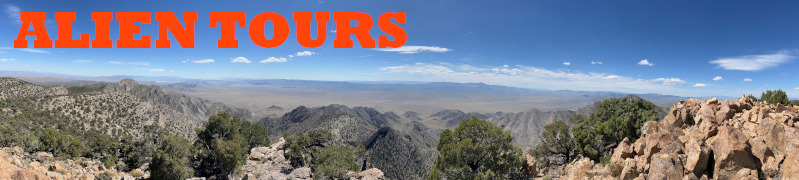
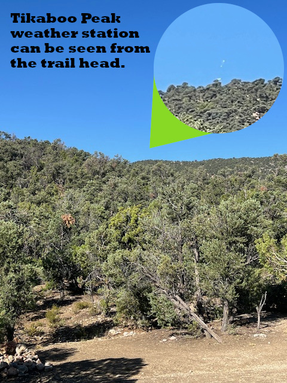
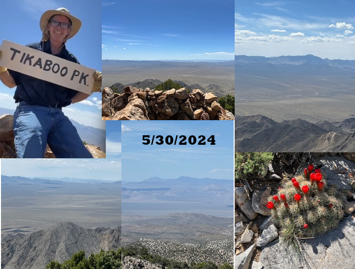
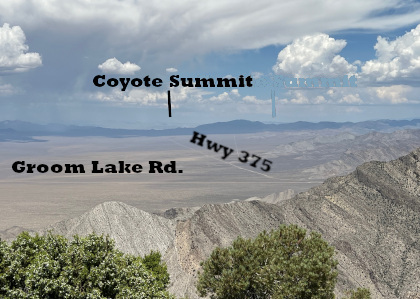

Alien Tours – Tikaboo Peak Experience
By Lewis Whitten

Welcome to Alien Tours. This page is a look at one of my favorite hikes in Nevada — Tikaboo Peak — the only public vantage point where you can see Area 51 with your own eyes. I’ve made this trek multiple times, sometimes with friends, and have gotten to know the trail well enough to complete it without relying on GPS.
This is not just a hike — it’s an experience. A journey through remote Nevada desert, up an 8,000-foot peak, with a view that very few people ever get to witness.
The Journey
The adventure begins with a one-hour drive from Alamo, Nevada along rugged dirt roads through wide-open desert. Along the way you’ll see mountains, valleys, wildlife, and some of the most untouched landscape in the state.
The hike starts on a wide red shale path — a steady, manageable climb that serves as a warm-up. But that comfort doesn’t last long.
Soon the trail narrows into a steep, rocky ascent through trees. This section is the most challenging — loose gravel, sharp incline, and very easy to lose the trail if you’re not careful. Taking breaks and pacing yourself is key.

After pushing through the hardest section, the trail opens into a breathtaking plateau. A wide valley stretches out below, and the final destination — the Tikaboo Peak weather station — comes into view.
From there, the final ascent begins. It’s steep, but manageable, and the reward at the top is unforgettable.
The Summit
At the peak, you are standing at one of the most unique viewpoints in the United States. On a clear day, Area 51 is visible to the naked eye. You’ll also see Groom Lake Road, the Extraterrestrial Highway, and surrounding mountain ranges stretching in every direction.
There’s a real sense of accomplishment here — and something else… a feeling that you’re seeing something you’re not supposed to see.

The Experience
The full trip typically takes around 5 to 6 hours:
- ~1 hour drive to trailhead
- 1.5–2 hours hike up
- Time at the summit
- ~1 hour hike down
This is a physically demanding hike, especially the middle section. With the right pacing and rest breaks, it is absolutely achievable for those prepared for it.
I recommend bringing:
- Plenty of water
- Hiking sticks (highly recommended)
- Good shoes with grip
- Snacks and sun protection
Notes from the Trail
This trail can be easy to lose — especially on the way down. I’ve experienced that firsthand. Over time, I’ve come to recognize key landmarks, turns, and general strategies that help keep the route on track.
If you decide to make the hike yourself, taking your time, paying attention to your surroundings, and being prepared will make all the difference.
Part of the appeal of Tikaboo Peak is that it still feels a bit wild — not overly marked, not overly traveled, and just challenging enough to make reaching the top feel earned.

Final Thoughts
Some people come for the hike. Some come for the view. Some come for what might be happening beyond that ridge.
For me, it’s a bit of all three. It’s a place I keep coming back to — and one that’s always worth the effort.
If you’re thinking about making the climb, I hope this gives you a sense of what to expect.